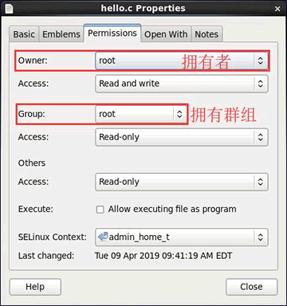

Linux UID和GID（用户ID和组ID）
说白了，用户名并无实际作用，仅是为了方便用户的记忆而已。
要论证 "Linux系统不认识用户名" 也很简单，在前面章节，我们曾经在网络上下载过 ".tar.gz" 或 ".tar.bz2" 格式的文件，在解压缩之后的文件中，你会发现文件拥有者的属性显示的是一串数字，这很正常，就是因为系统只认识代表你身份的 ID，这串数字就是用户的 ID（UID）号。Linux 系统中，每个用户的 ID 细分为 2 种，分别是用户 ID（User ID，简称 UID）和组 ID（Group ID，简称 GID），这与文件有拥有者和拥有群组两种属性相对应（如图 1 所示）。

图 1 文件的拥有者和群组属性
从图 1 中可以看到，该文件的拥有者是超级管理员 root，拥有群组也是 root。读者可能会问，既然 Linux 系统不认识用户名，文件是如何判别它的拥有者名称和群组名称的呢？
每个文件都有自己的拥有者 ID 和群组 ID，当显示文件属性时，系统会根据 /etc/passwd 和 /etc/group 文件中的内容，分别找到 UID 和 GID 对应的用户名和群组名，然后显示出来。
/etc/passwd 文件和 /etc/group 文件，后续文章会做详细讲解，这里只需要知道，在 /etc/passwd 文件中，利用 UID 可以找到对应的用户名；在 /etc/group 文件中，利用 GID 可以找到对应的群组名。
做个小实验，笔者所用的 Linux 系统中，常用的有两个账户，分别为 root 超级管理员账户和 c.biancheng.net 普通账户，我们先使用 root 账号登陆并 Vim /etc/passwd，在该文件中找到 c.biancheng.net 账户并将其 UID 随意改一个数字，这时当你查看普通账户拥有的文件时，你会发现所有文件的拥有者不再是 c.biancheng.net，而是数字。具体执行过程如下所示：
#查看系统中是否存在c.biancheng.net这个用户
[root@livecd ~]#grep 'c.biancheng.net' /etc/passwd
c.biancheng.net:x:500:500:c.biancheng.net:/home/centoslive:/bin/bash
[root@livecd ~]#ll -d /home/centoslive
drwx------. 23 c.biancheng.net centoslive 4096 Apr 9 09:37 /home/centoslive
[root@livecd ~]#vim /etc.passwd
#修改c.biancheng.net账户中的UID（第一个 500）为 2000
[root@livecd ~]#ll -d /home/centoslive
drwx------. 23 500 centoslive 4096 Apr 9 09:37 /home/centoslive
#可以看到，之前的 c.biancheng.net 变为了 500，因为修改了UID，导致 500 找不到对应的账号，因此显示数字
#记得最后将其再手动改正过来
[root@livecd ~]#vim /etc.passwd
#修改c.biancheng.net账户中的UID从 2000 改为 500
注意，本节为了说明 ID 和用户名的对应关系，所以才将 /etc/passwd 文件中用户的 UID 做了更改。此操作很可能会导致某些程序无法进行，因此 /etc/passwd 文件不能随意修改。
关注公众号「站长严长生」，在手机上阅读所有教程，随时随地都能学习。内含一款搜索神器，免费下载全网书籍和视频。

微信扫码关注公众号